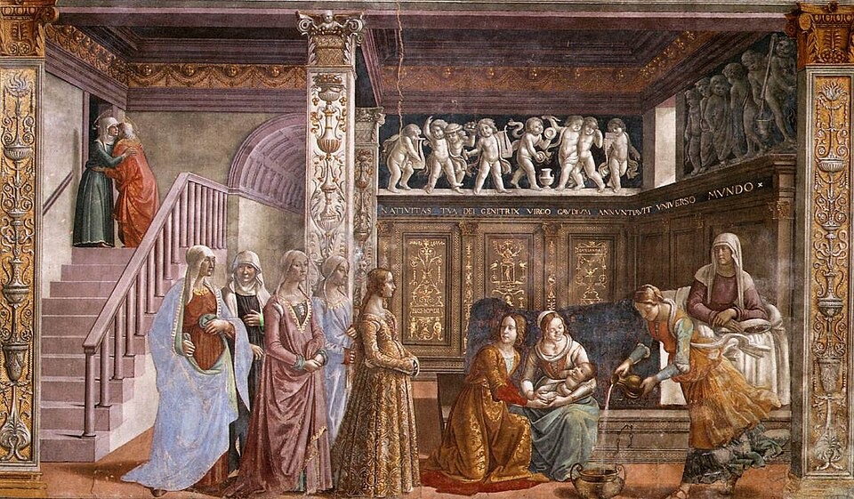

Camicia
Lightweight linen underdress or shift worn next to the skin. In art, look for white linen at the neckline, cuffs, sleeve gaps, or beneath open sleeves.
- Worn by
- Women
- Regions
- All Italian regions
The period art often shows only the visible edges, because the camicia is the base layer under the dress.
Citation: Domenico Ghirlandaio, Birth of Mary, Tornabuoni Chapel, Santa Maria Novella, Florence, 1486–1490. Public domain reproduction via Wikimedia Commons.